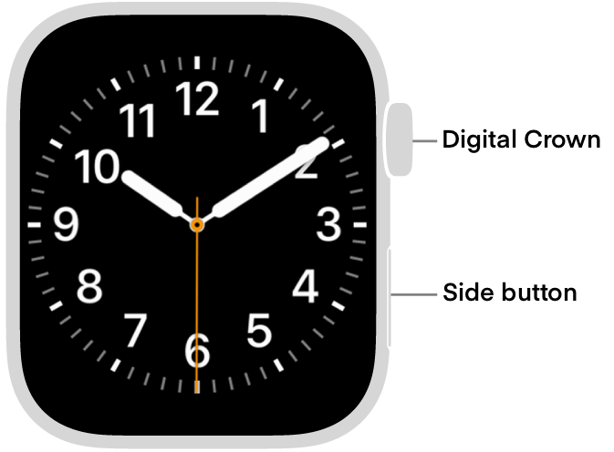
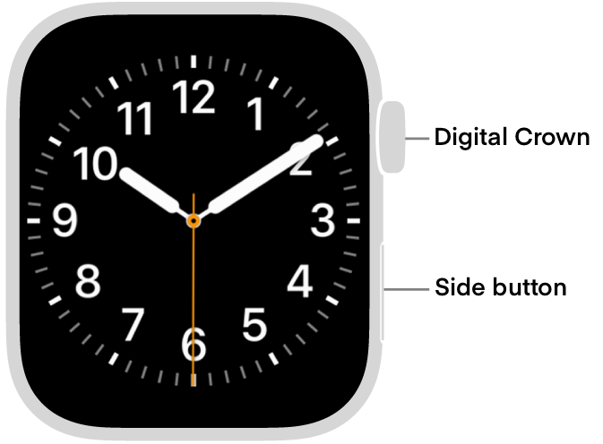

Restart Your Apple Watch
When something goes wrong with technology, the first step of troubleshooting is to restart or force restart a device. In this article, we will go over how to restart your Apple Watch and the paired iPhone.
Go to the Restart iPhone article to learn how to restart the paired iPhone: Restart iPhone >
Restart Apple Watch
Power-off
Press and hold the side button until the sliders appear, tap the Power Button, then swipe to the right on the "Power off" slider.
Power-on
Hold down the side button until the Apple logo appears
 

Note: You cannot restart your Apple Watch while it's charging.
Force Restart Apple Watch
If you can’t turn off your Apple Watch or if the problem continues, you may need to force your Apple Watch to restart. Do this only if you’re unable to restart your Apple Watch.
To force restart, hold down the side button and the Digital Crown at the same time for at least ten seconds, until the Apple logo appears.
Last updated: October 12, 2024
All Apple ID's have been updated to Apple Accounts. Your data is still safe and secure and your login info is still the same.
An Apple Account can be created on an iOS device with iOS 9 or later.
Reference the original support article by Apple here: Restart Your Apple Watch - Apple Support
All images used in this article are Apple's found on their offical articles and belong to them.
All references to Apple Inc. and their products and services are trade-marked and are used in these articles for educational purposes.